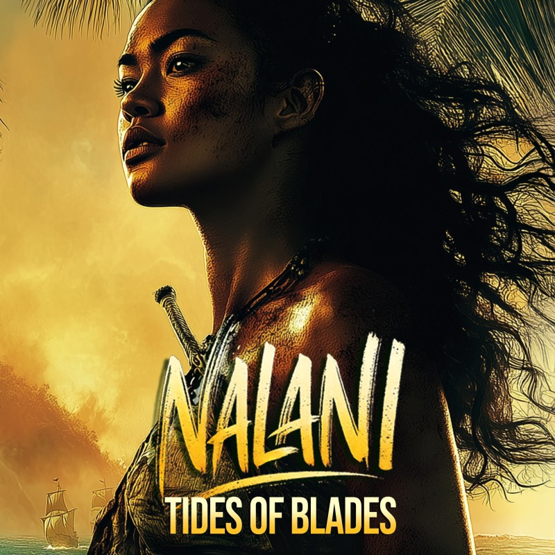

WORLDMATAALA
VOICENALANI
MOVEMENTAsh & Flame
Blades of War
Ash & Flame · A cinematic song and music video from a 19th-century Polynesian historical fiction
The Scene
It opens on a single tribal drum, struck hard and left to ring in the spaces between. Two hulls rise from the dark, one for wealth, one for debt; on the sand where steel meets the sea there are no kings and no names left, just ash and flame, and the ending turns heavy.
Lyrics
They freeze they do not move
They recognize this breath's their last
A whisper moves a dagger gleams
The dark is kind The steel still sings
A shape a gasp a flash of red
A heavy breath a man lies dead
A dozen eyes a dozen blades
No mercy left no debts unpaid
The fire runs the torches rise
The jungle burns they taste the sky
No chains to hold no walls remain
No kings no names just ash and flame
A hammer swings a body breaks
A beast of war no soul to take
He fights alone he does not kneel
But death is real and death is steel
His hands still grip his breath still stays
But death now walks and calls his name
A broken instrument of men come to his end
Dark hulls rise where shadows creep
Two forces move the tide runs deep
One seeks gold one seeks land
One wields fire one makes a stand
The oars pull fast the decks stand tight
The cannons wait the muskets light
A shadow looms the course is set
One moves for wealth one moves for debt
The first to land the first to die
Steel on sand shots crack the sky
The hills awake the jungle breathes
One side blinds the other sees
Smoke and shadow hands unseen
A plan laid bare a field wiped clean
He moves for claim he moves for pride
But finds the ground shifts at his side
The muskets crack the steel ignites
The sea spills men into the fight
They march ashore they charge in line
But blood runs faster than their time
No claim no crown just what we take
A debt in fire a war remade
The sky turns red the earth is torn
The past is gone but war goes on
The tide still shifts the sea still waits
No victory clean no path left straight
The world still calls the gate still keeps
And the keeper wakes too dark too deep